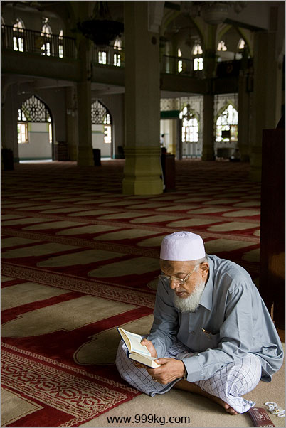
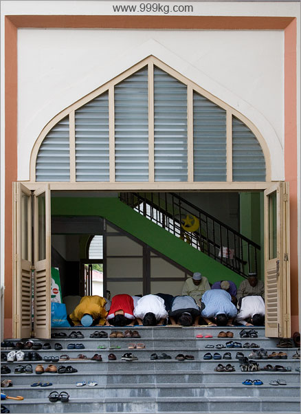
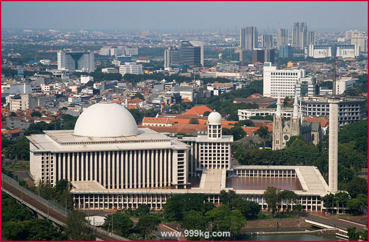
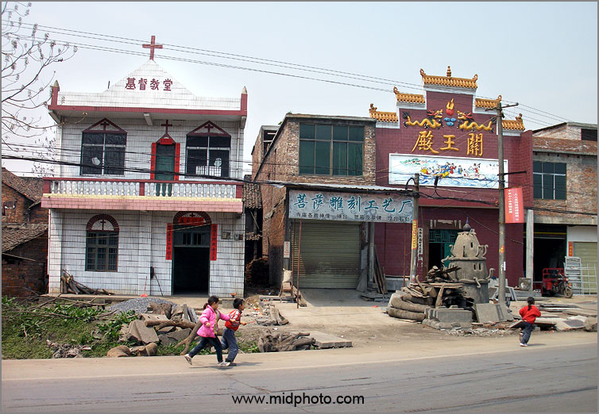

老杨急就章系列（28）
宗教与战争–与穆斯林大学生的谈话纪要
by 长沙杨飞
湖南大学有不少新疆学生，大部分是维族穆斯林。吃过大盘鸡之后，前天下午我和他们中间的两位进行了两个小时的交流，主要谈宗教问题。现把我的主要观点回顾一下，大家扔砖。
宗教的好处是不容否认的，它劝人向善，并给人以精神支撑。但我们翻历史书却发现，宗教很多时候并不是社会的融合因素，而是分裂和战争的因素。人类战争的原因很复杂，领土、财产和权力等因素交织，但宗教不可否认也是原因之一，有时甚至是战争的主要因素，从古至今都是如此，从十字军东征、科索沃到纽约911。
在冷兵器时代，战争顶多意味着血肉横飞，过几十年又是一条好汉。在核武器时代，大规模战争的最后结果只有一个，那就是人类的灭亡。人都没有了，这个世界就彻底无意义，包括宗教。

宗教引发战争的根本原因在于排他性。所谓排他就是说你只能信一个，其他的都是异端。宗教信仰强调绝对服从（主或者神）。绝对意味着排他。排他性是宗教的天然属性。
每个宗教都排他，但并不是每个宗教都严酷对待异教徒。伊斯兰教最好斗，基督教次之，佛教最温和。作为宗教，佛教当然也是排他的（佛陀是佛教徒唯一的导师），为什么佛教基本不具有攻击性？原因有二：1，佛教强调不杀生，不论教内教外（无论是不是佛教徒）；2，佛教和世俗政权的结合最为松散。
虽然基督教也强调不杀人，但那只是本教内部（或本教派内部）。《圣经》里面有很多文字把不信耶稣的人直接定为犯罪分子，但是《圣经》并没有规定对异教徒的具体处罚措施。只有在世俗政权与基督教紧密结合的时代，比如说欧洲的中世纪，才会出现审判甚至杀戮异教徒的情况。
我们可以这样总结：宗教和政权结合的程度越深，它就越恐怖。只要政教合一，就无法避免严酷对待异教徒，无法避免争端与战争。宗教思想具有绝对性，而国家是一个暴力工具。一个绝对的思想一旦和暴力工具结合，那就意味着“绝对思想+绝对暴力”。这就是恐怖的深渊。这不是伊斯兰教所独有，中世纪的基督教，以及旧西藏的喇嘛教都是如此。
补充一点，如果说马克思主义和共产主义也是一种隐性宗教的话，就不难理解为什么北朝鲜等共产主义国家会出现红色恐怖的情况。再次强调，任何宗教和世俗政权的结合必定导致黑暗恐怖。
在历史上，伊斯兰教国家（如阿拉伯帝国、土耳其帝国）、某些基督教国家（如拜占庭帝国），以及旧西藏，都是典型的政教合一。伊斯兰教的传播和阿拉伯帝国的战争扩张密不可分。从先知穆罕默德创立伊斯兰教开始，伊斯兰世界就具有政教合一的传统，某些国家今天依然如此。另外，帝国时期的日本，天皇为神道教头号祭司，那时的日本也类似政教合一。
现代多数国家实行政教分离的政治制度，宗教是公民的私事，国家不干涉教会事务，教会也不行使任何国家职权。美国宪法确立了美国不尊崇任何国教，大家有信教的自由，但是宗教信仰和世俗政权各行其道。这是美国的立国之本，也是西方国家遵从的普遍原则。由此可见，现代西方价值观与政教合一的传统伊斯兰世界是根本冲突的。
并不是所有的伊斯兰国家都出现恐怖统治，都具有强烈的攻击性。准确地说，伊斯兰极端教派掌权的国家才会出现恐怖统治的情况，比如阿富汗塔利班政权。巴基斯坦是核武器国家，也是伊斯兰国家，但巴基斯坦并不是完全的政教合一，宗教法和世俗法基本各行其道，属于温和派伊斯兰国家。伊朗的情况就很不相同，它基本属于典型的政教合一，一旦它掌握了核武器，结果就很难预料。
虽然佛教也有自己的问题，但只要它不与政权过度结合，佛教就不会成为人类争端的主要原因。基督教由于与世俗政权日益分道扬镳，也不太可能成为人类争端的原因。当今世界最大的难题是如何解决伊斯兰教的攻击性问题。这个问题不解决，若伊斯兰国家越来越多地掌握核武器，就将成为人类灭亡的定时炸弹。所以，西方国家对伊斯兰国家掌握核武器技术是最为担心的，以色列不惜千里空袭炸毁伊拉克核设施，西方国家对伊朗的核电站技术也是极尽打压，原因都在于此。

要消除伊斯兰教的攻击性难度很大，原因主要有二，第一是我上面提到的伊斯兰政教合一的传统；第二，《古兰经》里面有宣扬直接攻击异教徒的文字。
但伊斯兰教政教合一的传统并非不可改变。马来西亚和印尼等准穆斯林国家不说，奥斯曼土耳其变成今天政教分离的土耳其共和国就是一例（但土耳其的极端穆斯林势力时有反扑）。沙特阿拉伯也是政教合一，其主流瓦哈比派属于原教旨主义派。原教旨主义者大多数属于极端派穆斯林，本拉登就出自沙特。沙特对内有宗教警察保持高压，但是对外政策还是比较温和的，基本能遵守国际社会准则，不像伊朗那样连美国大使馆都能攻占，扣留外交官作为人质，完全践踏国际准则。总而言之，穆斯林国家也表现出了极大的多样性，不能一概而论。

根据盖洛普的调查问卷，接近90%的穆斯林是温和的，但是温和派穆斯林往往习惯沉默。相反，伊斯兰极端教派往往较为大声，他们用各种手段绑架民意，许以虚假承诺，并伺机夺取政权。广大温和派穆斯林要对此保持警惕，积极发出自己的声音。为了全人类的共同利益，西方国家应该要积极扶持温和派穆斯林，全世界人民应该团结起来支持温和派穆斯林，消灭极端派穆斯林和恐怖分子。基于伊斯兰教的历史和现状，这将是一个任重而道远的任务。
第二点，如何对待《古兰经》里面的攻击性文字。我举个例子，《古兰经》9:5原文是：“当禁月逝去的时候，你们在哪里发现以物配主者，就在哪里杀戮他们，俘虏他们，围攻他们，在各个要隘侦候他们。如果他们悔过自新，谨守拜功，完纳天课，你们就放走他们。真主确是至赦的，确是至慈的。”
这节经文被称作“宝剑经文”
，意思是说过了禁月的宽限期后，穆斯林可以对异教徒在任何时间和任何地点宣战，除非他们皈依伊斯兰教。这段经文也是被伊斯兰极端分子以及原教旨主义者引用最多的一段。
要指出的是，《古兰经》里面既有严酷对待异教徒的文字，也有宽容和趋向于和平的文字。比如《古兰经》8:61说：“如果敌人倾向和平，你也应当倾向和平，应当信赖真主。”换句话说，恐怖主义者与和平主义者都能在《古兰经》里面找到根据。温和派穆斯林，包括广大的穆斯林学界人士（以及大学生），要积极强调古兰经和圣训里和平的一面，并对那些攻击性的文字进行有利于和平的阐述，比如在哪些条件下才能攻击异教徒，而这些条件在当今世界基本已经不复存在。
这样做实际上相当于伊斯兰教新的改革。宗教改革并不是什么新东西，它从古至今都在进行。新教对天主教的改革就是一例，路德派和加尔文派都不承认原圣经中的《启示录》这一章，马丁路德还曾经试图把《雅各书》、《彼得后书》、《启示录》和《希伯来书》都从圣经中剔除，把它们贬为次经（伪经）。

伊斯兰教有一个德鲁兹派，分布在中东的五个国家，人数不到两百万，他们也信奉《古兰经》，但他们另有一本教派创始人的《智慧书》，这本书同样具有至高无上的地位。德鲁兹派的信徒不履行伊斯兰教法所规定的五项宗教功课，不履行礼拜、朝觐、天课、圣战等义务，不设清真寺，就在家里朝拜，简化宗教礼仪。所以，德鲁兹派被大多数伊斯兰教派视为异端。
德鲁兹派的故事告诉我们，宗教改革应该“一切皆有可能”，可以重新规划宗教礼仪、重新阐述传统教义。对伊斯兰世界来说，尤其重要的是重新审视政教合一的传统，分开世俗权力和精神权力。让上帝的归上帝，凯撒的归凯撒。
我并不否认宗教的排他性，但是现代宗教改革的最终目的，应该是承认异教徒的平等地位。不同的宗教和教派，都应求同存异，把平等和宽容作为第一诉求，把人的生命置于最高地位。种族延续是人类的最高目标，若是人都没有了，这个世界就彻底无意义，包括宗教。
杨飞，
2014/5/3原稿，
2016/7/16修改
相关阅读
关注老杨
杨飞作品集：999kg.com
微信：laoyang2063
微信公众号：老杨书吧
新浪微博@长沙杨飞
推特Twitter@feiyang17
脸书Facebook@长沙杨飞
电子邮件：starrytibet@gmail.com